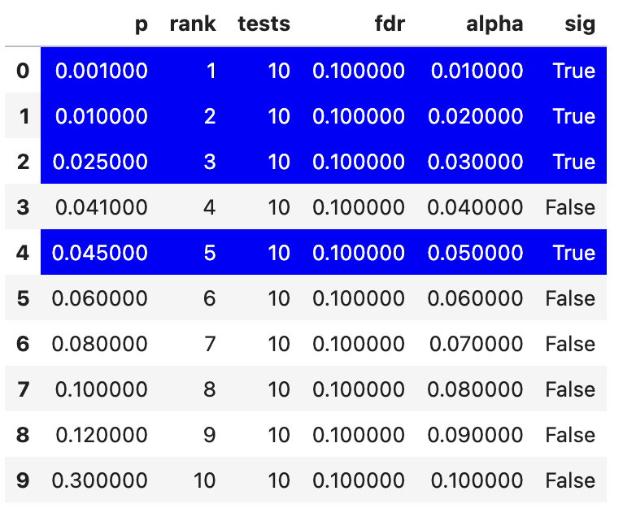

Click here for a reminder about what positive and negative effects are in the population
In the context of multiple testing we will refer to effects in the population that do exist as positives, and effects that don’t exist in the population as negatives. This means that a test on a negative effect should ideally you give you a non-significant (negative) result in your sample so that your sample reflects the population (and gives you a true negative). Similarly, if an effect in the population exists, ideally your test on your sample will give you a significant result to reflect a true positive.
What is the False Discovery Rate?
The false discovery rate (FDR) is the expected proportion of false positives out of all positives (both true and false). In simpler terms, out of all the findings you present as positive, FDR reflects how many of them are false. It can be formalised as:
We will investigate one procedure that aims to control the FDR and then do simulations to confirm whether it is successful.
Benjamini-Hochberg procedure
Similar to Bonferroni-Holm corrections, you first rank all the p-values of all your tests, and then calculate the \(\alpha\) threshold depending on the rank. This calculation will also include your estimation of the false discovery rate
\[
\alpha = (k/m)*Q
\]
\(\alpha\) is the p-value significance threshold for the specific test
\(k\) is the rank of the current test’s p-value. 1 represents the smallest p-value
\(m\) is the total number of tests
\(Q\) is the false discovery rate (chosen by the researcher)
Let’s see what \(\alpha_{bh}\) values we get with this approach within a made-up experiment that had 10 tests
import pandas as pd# Create a DataFramebh_df = pd.DataFrame({'p': [.001, .01, .025, .041, .045, .06, .08, .1, .12, .3],'rank': list(range(1, 11)),'tests': 10,'fdr': 0.1})# Calculate alpha and significancebh_df['alpha'] = (bh_df['rank'] / bh_df['tests']) * bh_df['fdr']bh_df['sig'] = bh_df['alpha'] > bh_df['p']# Create a custom styling function to highlight rowsdef highlight_greaterthan(s, threshold, column): is_max = pd.Series(data=False, index=s.index) is_max[column] = s.loc[column] >= threshold# Create a style object with blue background and white color for the text style = ['background-color: blue;color: white'if is_max.any() else''for v in is_max]# Set white text for the entire rowreturn stylebh_df.style.apply(highlight_greaterthan, threshold=1.0, column=['sig'], axis=1)

We can see that there’s a slightly odd pattern, in which the fourth smallest p-value is not significant but the fifth is. For the Benjamini-Hochberg correction you take the lowest ranked p-value that is still significant and then accept all tests that have a smaller p-value than it as significant. So the rank 4 test above would be accepted as significant because of this rule.
Let us now check how this correction relates to positives and negatives in the population using some simulations. For these simulations we will split the data into “positive” and “negative” population tests. For “positive” effects in the population we will use one-sample t-tests to generate expected p-values. For negative effects in the population we will generate a p-value between 0 and 1 as each p-value is equally likely for negative effects. We will also assume the proportion of positive effects being tested is .5, i.e. that half of our tests should get a significant result to reflect the population and the other half should be negative.
Optional: Click here to see the R code to generate the data for the figure below
Figure 1: A simulation of FDR when using Benjamini-Hochberg procedure. The “Researcher estimated FDR” is the q-value that the researcher chooses.
The above simulations show an association between the false discovery rate a researcher sets (known as \(q\)) and the actual false discovery rate. Whilst this page focuses on a scenario in which half of the effects being tested are positive, see here for the impact of having different positive rates on the FDR rate. The good news is that the Benjamani-Holchberg procedure generally keeps the FDR below the \(q\) that the researcher sets.